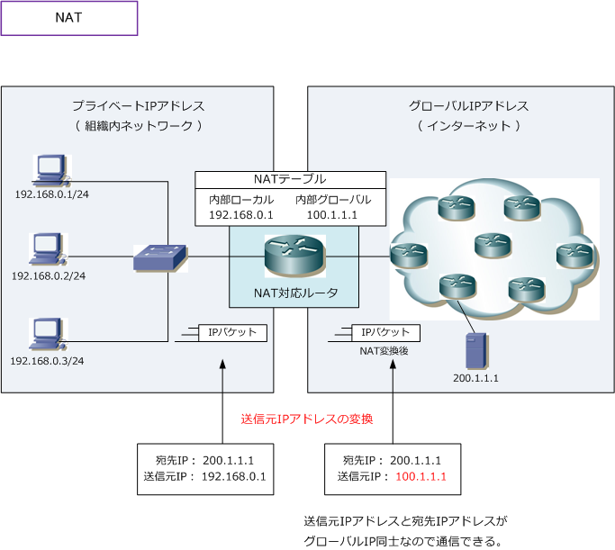
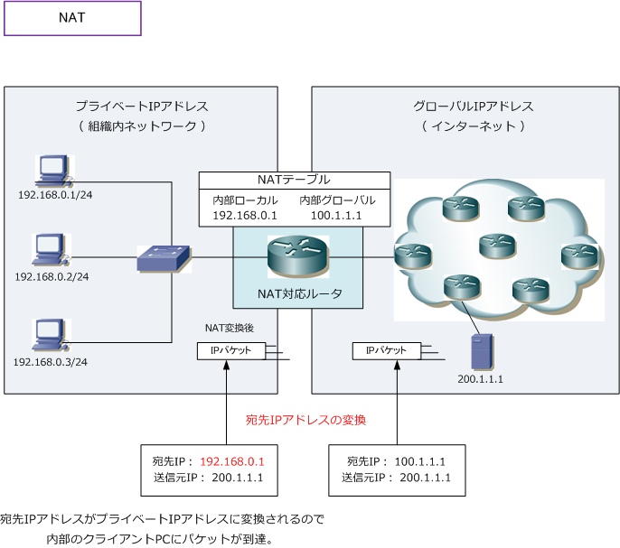
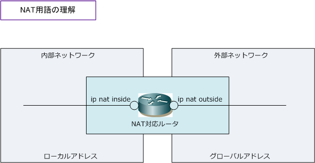
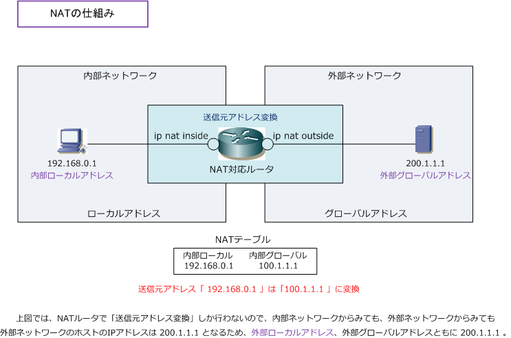

NAT （ Network Address Translation ）
NATとは
NAT（Network Address Translation）はIPアドレスを変換する技術です。一般的には、プライベート IPアドレスをグローバルIPアドレスに変換する技術とされています。インターネットでは、グローバル IPアドレスを使用して構築したネットワークですが、企業ネットワークでは、プライベートIPアドレス を使用して構築されたネットワークなので、企業LANネットワークのクライアントPCがインターネット 接続する場合、プライベートIPアドレスをグローバルIPアドレスに変換（NAT）をする必要があります。
NATの特徴
NATでは一般的にIPパケットのヘッダ内にある送信元IPアドレスを変換します。企業ネットワークでは 送信元IPアドレスがプライベートIPアドレスなので、NATによってグローバルIPアドレスに変換します。
NATでは、企業内LANのクライアントPCに割り当てられたIPアドレスを変換してインターネット通信が 行われることから、セキュリティが向上する利点がある一方、アプリケーションによりNAT変換による 通信では正常に動作しない問題点もあります。※ L3ではなくL7のデータ部にもIP情報がある場合です。

NATでは内部（企業内LAN）ネットワークから外部（インターネット）ネットワークへ、パケットが送信 される時は、IPパケットのヘッダ内にある送信元IPアドレスが変換されるが、下図のように外部から内部 へパケット（サーバからの返信パケット）が送信される時は宛先IPアドレスが変換されることになります。

CiscoにおけるNAT用語
シスコではNATの用語を以下のように定義しています。以下の用語がCiscoルータなどのNAT変換を 行う機器において実際のステータス情報として出力されるので、正しく理解しておく必要があります。
| NAT用語 | Ciscoでの出力表示 | 内容 |
|---|---|---|
| 内部ローカルアドレス | Inside local | 内部ネットワークのホストに割り当てられるIPアドレス （一般的には、企業LANで割り当てられるプライベートIPアドレス） |
| 内部グローバルアドレス | Inside global | 外部ネットワークから見た、内部ネットワークのホストのIPアドレス。 （一般的には、ISPから割り当てられるグローバルIPアドレス） |
| 外部ローカルアドレス | Outside local | 内部ネットワークから見た、外部ネットワークのホストのIPアドレス。 （一般的には、グローバルIPアドレス） |
| 外部グローバルアドレス | Outside global | 外部ネットワークのホストに割り当てられるIPアドレス。 （一般的には、グローバルIPアドレス） |
一般的には、内部ネットワークとは企業LANネットワーク側で、外部ネットワークとはインターネット側と なりますが、実際にはCiscoルータで ip nat inside と設定したネットワークが内部ネットワークとなり、 ip nat outsideと設定したネットワークが外部ネットワークとなります。この説明内容に例外はありません。 ※ ローカルアドレスとはネットワーク内部で表現されるアドレス、グローバルアドレスとはネットワーク外部で表現されるアドレス。

NATには色々なアドレス変換方法がありますが、NATやNAPTでは送信元アドレスの変換をさせるケースが 多いです。その場合は、下図のとおり意識すべきは「内部ローカルアドレス」、「内部グローバルアドレス」 「外部グローバルアドレス」の3つ。送信元アドレス変換では「外部ローカルアドレス」と「外部グローバル アドレス」の変換が行われないので、Cisco機器のステータスでもこれらには同じIPアドレスが表示されます。
